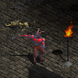
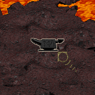
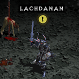
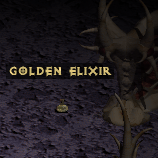

QUESTS
As you probably know, quests in the original Diablo game are randomized, being set into groups and 1 from each group is always left out, thus you are always served only some of the quests. Now forget about that, Diablo 1 HD will treat you to all quests in any game you play, and on top of this it resurrects most of the unused ones that didn't make the retail version and were buried in the game files.
1. THE BUTCHER
START: Speak with Ogden then go at the northern point of town at the Cathedral's entrance and speak with the Wounded Townsman. TASK: Search Cathedral Level 2 for a room painted red with the blood of dead townspeople. Remember it's location for a future quest. END: When The Butcher is defeated. REWARD: Unique axe THE BUTCHER'S CLEAVER (Normal Difficulty) / Rare axe (Nightmare/Hell/Torment Difficulty).2. POISONED WATER SUPPLY
START: (If the quest is now available right when a new game starts) Enter Cathedral Level 1 and return in town to speak with Pepin. TASK: Search Cathedral Level 2 for an entrance into the Water Passage, where you must defeat Rammaq the Poisoner and all foes. END: After the water turns from yellow to blue, return to town and speak again with Pepin. REWARD: Unique ring RING OF TRUTH (Normal Difficulty) / Rare ring (Nightmare/Hell/Torment Difficulty).3. THE BUTCHER'S CHAMBER

 START: Enter Cathedral Level 2 and return in town to speak with Wirt. (read backwards)
TASK: Search Cathedral Level 2 for a bloody room, cast Town Portal inside, go in a portal to Butcher's Chamber and face the Butcher.
END: When the Butcher is defeated.
REWARD: None (Normal/Nightmare/Hell/Torment Difficulty).
START: Enter Cathedral Level 2 and return in town to speak with Wirt. (read backwards)
TASK: Search Cathedral Level 2 for a bloody room, cast Town Portal inside, go in a portal to Butcher's Chamber and face the Butcher.
END: When the Butcher is defeated.
REWARD: None (Normal/Nightmare/Hell/Torment Difficulty).
4. THE CURSE OF KING LEORIC
 START: Enter Cathedral Level 2 and return in town to speak with Ogden.
TASK: Search Cathedral Level 3 for an entrance into King Leoric's Tomb, and enter the Skeleton King's Lair to face him and his army.
END: After the Skeleton King is defeated, return to town and speak again with Ogden.
REWARD: Unique head gear THE UNDEAD CROWN (Normal Difficulty) / Rare head gear (Nightmare/Hell/Torment Difficulty).
START: Enter Cathedral Level 2 and return in town to speak with Ogden.
TASK: Search Cathedral Level 3 for an entrance into King Leoric's Tomb, and enter the Skeleton King's Lair to face him and his army.
END: After the Skeleton King is defeated, return to town and speak again with Ogden.
REWARD: Unique head gear THE UNDEAD CROWN (Normal Difficulty) / Rare head gear (Nightmare/Hell/Torment Difficulty).
5. OGDEN'S SIGN
START: Enter Cathedral Level 4 and return in town to speak with Ogden. (OR find and speak with Snotspil on Cathedral Level 4) TASK: Search Cathedral Level 4 for a square room with a few Overlords. Inside there is a chest, open it and pick up the Tavern's Sign. END: Return to town and take Tavern's Sign back to Ogden. (OR take the sign to Snotspil, thou this way you forfeit the quest's reward) REWARD: Unique head gear Harlequin Crest (Normal Difficulty) / Rare head gear (Nightmare/Hell/Torment Difficulty).6. MAGIC ROCK
START: Enter Cathedral Level 4 and return in town to speak with Griswold. TASK: Search Catacombs Level 5 for a pedestal with The Magic Rock on it. Approach and touch it to pick up The Magic Rock. END: Return to town and take The Magic Rock to Griswold. REWARD: Unique ring Empyrean Band (Normal Difficulty) / Rare ring (Nightmare/Hell/Torment Difficulty).7. GHARBAD THE WEAK
 START: Enter Cathedral Level 4 and search for a goatman, Gharbad the Weak, to speak with. TASK: After 1st speech, move 1 screen away and return for 2nd speech. Then again move 1 screen away and return for final speech. END: When Gharbad the Weak is defeated. REWARD: Random stuff after 2nd speech + Rare item when he is defeated (Normal/Nightmare/Hell/Torment Difficulty).8. THE INFESTATION OF THE WORMS
START: Enter Catacombs Level 5 and return in town to speak with Pepin. TASK: The house in the southern point of town is now accessible and needs to be cleared of poisonous vipers that took refuge there. END: After Warmaggot The Mad is defeated, return to town and speak again with Pepin. REWARD: 5 Spendable Attribute Points (Normal/Nightmare/Hell/Torment Difficulty).9. VALOR
START: Enter Catacombs Level 5, search for a cross-shaped room which has inside a stand that holds the Book of Blood, and read it. TASK: Put on the Blood Pedestal all 3 Bloodstones, 2 are in the newly opened rooms on the left / right side, then face the Risen Hero. END: When Risen Hero is defeated. REWARD: Unique body armor ARKAINE'S VALOR (Normal Difficulty) / Rare body armor (Nightmare/Hell/Torment Difficulty).10. CHAMBER OF BONE
START: Enter Catacombs Level 6, search for a small square enclosure with a nearby stand that holds the Mythical Book, and read it. TASK: Take a newly opened path to The Chamber of Bone, here a horned demon, Ormlos the Impaler guards a tome in the last room. END: When The Ancient Tome is read. REWARD: +1 level Guardian Spell (Normal/Nightmare/Hell/Torment Difficulty).11. HALLS OF THE BLIND
START: Enter Catacombs Level 7, search for an eight-shaped room with a nearby stand that holds the Book of the Blind, and read it. TASK: Go into the newly opened eight-shaped room to face Hazeshifter and his hidden minions, all of which turn invisible while moving. END: When Hazeshifter is defeated. REWARD: Unique amulet OPTIC AMULET (Normal Difficulty) / Rare amulet (Nightmare/Hell/Torment Difficulty).12. ZHAR THE MAD
START: Enter Catacombs Level 8, search for a room with Library Tomes, a Bookcase and a mage, Zhar the Mad, and speak with him. TASK: Touch the Bookcase in Zhar the Mad's room to steal a SpellBook and infuriate him, he will turn hostile and you have to face him. END: Zhar the Mad is defeated. REWARD: (From the speech before he turns hostile) SpellBook (Normal Difficulty) / Rare staff (Nightmare/Hell/Torment Difficulty).13. HORAZON'S SANCTUM
START: Enter Catacombs Level 8, search for 3 Spell Tomes to read in order (N/E/W) so a path opens up, and read the Arcane Tome. TASK: Use the telepad above the Arcane Tome to reach Horazon's Sanctum, here at the end of a path you find 2 adjacent rooms, one has the Crature of Flame Tome and if you read it you can face an elemental, and the other room has a Tome of Knowledge and a mage you can face, Cibinensis the Charlatan. At the end of the other path you'll find Horazon's Journal and an entrance into The Pit where you can face Doomlock. Then use another telepad to go back up to Horazon's Sanctum, read a Book of Names that's near a circle of binding to free Grimspike and face him. Upon his defeat The Summoner appears, and if you touch him he becomes hostile and you can face him. END: When The Summoner is defeated. REWARD: (If you follow the order and defeat The Summoner last) +1 level Golem Spell (Normal/Nightmare/Hell/Torment Difficulty).14. BLACK MUSHROOM
START: Enter Caves Level 9, search for a Fungal Tome and take it to Adria. OPTIONAL: search for and touch the Slain Hero's body. TASK: Find a Mushroom Patch, take a Black Mushroom and bring it to Adria. Then speak with Pepin and bring him any Demon's Brain. END: After you take the Spectral Elixir to Adria. (OR if you just drink it, she'll let you keep it anyway) REWARD: +3 to all base Attributes (Normal/Nightmare/Hell/Torment Difficulty). OPTIONAL: Rare weapon based on your character.15. THE ANVIL OF FURY
 START: Enter Caves Level 10 and return in town to speak with Griswold. TASK: Search for the Anvil of Fury on a peninsula surrounded by lava, be wary that if you approach it the Smith attacks. (Telekinesis?) END: Return to town and take the Anvil of Fury back to Griswold. REWARD: Crafting + Unique sword THE GRISWOLD'S EDGE (Normal Difficulty) / Rare sword (Nightmare/Hell/Torment Difficulty).16. ANDARIEL, MAIDEN OF ANQUISH
START: Enter Caves Level 11 and return in town to speak with Gillian. TASK: Search the NW of town for a entrance into the Underground Passage, which leads to Forest's Edge where you'll face Andariel. END: After Andariel is defeated, return to town and speak again with Gillian. REWARD: Unique amulet MAIDEN'S BROACH (Normal Difficulty) / Rare amulet (Nightmare/Hell/Torment Difficulty).17. THE ISLAND OF THE SUNLESS SEA
START: Enter Caves Level 12 and return in town to speak with Farnham. TASK: Search Caves Level 12 for a chamber with 4 stones to step in order (S/N/E/W) so a path into Island of The Sunless Sea opens. Here you must find and touch all 8 Corrupted Flames so that Samael The Deadspeaker appears near the statue, and you can face him. END: When Samael The Deadspeaker is defeated. REWARD: 5 Spendable Attribute Points (Normal/Nightmare/Hell/Torment Difficulty).18. FLESHDOOM
START: Enter Caves Level 12 and return in town to speak with Tremain. TASK: Search Hell Level 13 for the balrog Fleshdoom, slay him and return in town to speak with Tremain who asks you to bring him Shadowfang. Then search Hell Level 14 for a room with a lever and 3 stones to step in order (LEVER/MIDDLE/RIGHT/LEFT/LEVER). Now use the telepad to go to the River of Flame where you'll face Hephasto the Armorer, who upon defeat drops his Hellforge Hammer. END: After you place Shadowfang on the Hellforge Anvil and strike it with the Hellforge Hammer. REWARD: Unique mace LIGHTFORGE (Normal Difficulty) / Rare mace/sword (Nightmare/Hell/Torment Difficulty).19. LOST TREASURE
START: Enter Hell Level 13 and return in town to speak with Wirt. TASK: Pick up and read the Tresure Map to open a path into the Secret Tunnel which is filled with poisonous vipers. Blow your way into the Soulstone Chamber and face the 3 mages, Astrologer Amarlic, Deadcaller Xuchotl and Bloodmage Aratus. Also step on the 4 stones from each corner room so that Sergius the Heretic appears and you have to face him twice, the 2nd time along with the 3 mages revived. END: When all 4 mages are defeated and the last one drops the Symbol of the Abandoned God. REWARD: +3 to all base Attributes (Normal/Nightmare/Hell/Torment Difficulty).20. WARLORD OF BLOOD
START: Enter Hell Level 13, search for 2 burning crucifixes near a stand that holds the Steel Tome, and read it. TASK: The path into Hell Level 14 is now accessible, yet guarded by Steel Lord knights and the Warlord of Blood, which you must face. END: When the Warlord of Blood is defeated. REWARD: 6 racks with random quality items, 4 weapons and 2 armor pieces (Normal/Nightmare/Hell/Torment Difficulty).21. IZUAL, THE FALLEN ANGEL
START: Enter Hell Level 15 and return in town to speak with Gillian. TASK: Search Hell Level 15 for a room with 12 barrels in the middle, cast Town Portal and go in a portal to the Temple of the Damned. Here you have to pull 2 skull levers and face the overlord Arch Rector Reppochssarg, who upon defeat will drop the Temple's Keystone. Then you must take the Temple's Keystone and place it on the Grim Pedestal so that the path to Izual opens, and you have to face him. END: After Izual is defeated, return to town and speak again with Gillian. REWARD: Unique sword AZUREWRATH (Normal Difficulty) / Rare weapon based on your class (Nightmare/Hell/Torment Difficulty).22. LACHDANAN
  START: Enter Hell Level 15 and search for a blood knight, Lachdanan, to speak with. (OR pick up the Golden Elixir from Hell Level 16) TASK: Search Hell Level 16 for a Golden Elixir found on the ground and take to Lachdanan, to free him from King Leoric's dark curse. END: After Lachdanan's soul is saved from damnation. REWARD: Unique helm VEIL OF STEEL (Normal Difficulty) / Rare helm (Nightmare/Hell/Torment Difficulty).23. ARCHBISHOP LAZARUS
START: Enter Hell Level 16, search for a Vile Stand that holds the Staff of Lazarus and take it to Cain. TASK: Search Hell Level 16 for a portal to the Unholy Altar, read the 2 Vile Tomes, return to the telepad and face Archbishop Lazarus. END: When Archbishop Lazarus is defeated. REWARD: Opens the passage into Terror's Domain (Normal/Nightmare/Hell/Torment Difficulty).24. THE MAP OF THE STARS
START: Enter Hell Level 16 and go in a portal to the Unholy Altar, open a large chest, pick up the Map of the Stars and take it to Cain. TASK: After defeating Archbishop Lazarus you have 1 hour to defeat Diablo before he reaches full power. Rush to the Terror Domain! END: When Diablo is defeated. (OR fail if 1 hour passes, and Diablo is almost impossible to beat, but restarting a game resets the timer) REWARD: Fair fight with Diablo. (Normal/Nightmare/Hell/Torment Difficulty).25. DIABLO
START: After Archbishop Lazarus is defeated return in town and talk to Cain. TASK: In the North room of Terror's Domain if you step on 4 stones you can face Doomlord Gam'ar, when he is defeated the East room opens and you can face Bloodlord the Destroyer, when he is defeated the West room opens and you can face Benedict the Black. Here in the West room if you touch the 3 Crucified Skeletons the South room opens and you can finally face The Lord of Terror, Diablo. END: After Diablo is defeated, touch Prince Albrecht, get the Soulstone and right-click it. (OR keep it in personal inventory till next game) REWARD: Completion of the current difficulty level.